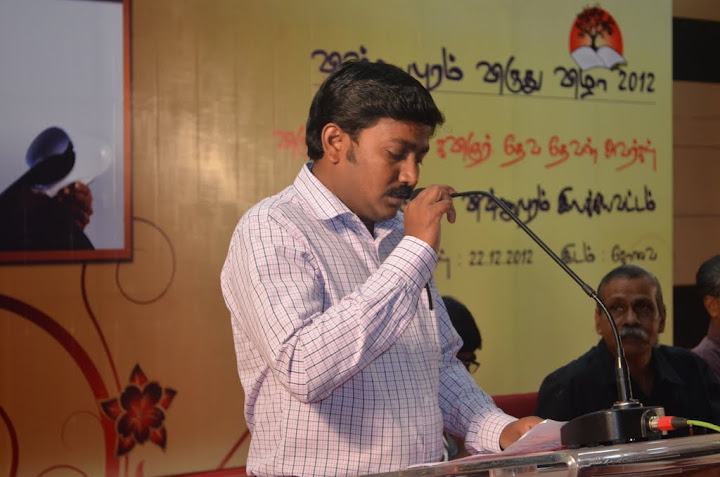
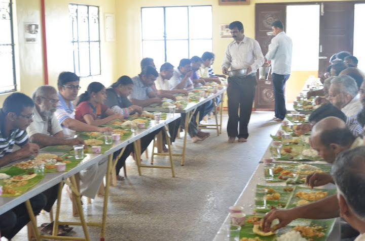
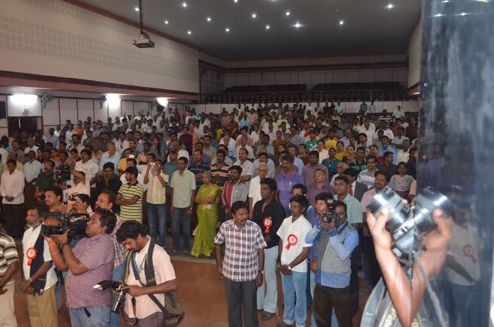
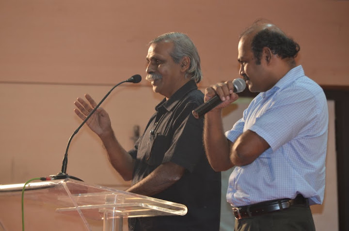
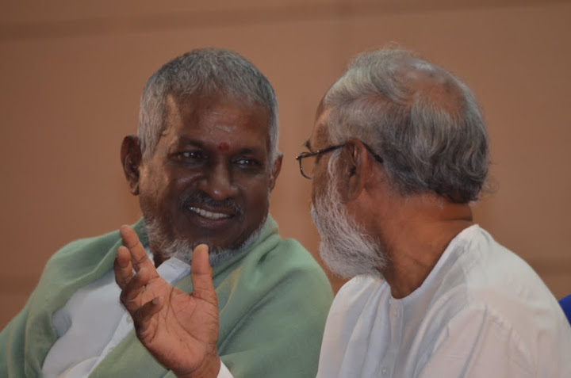
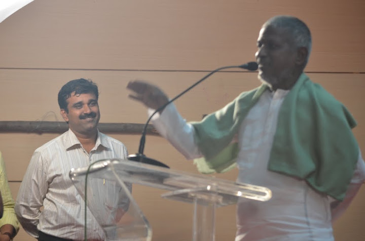
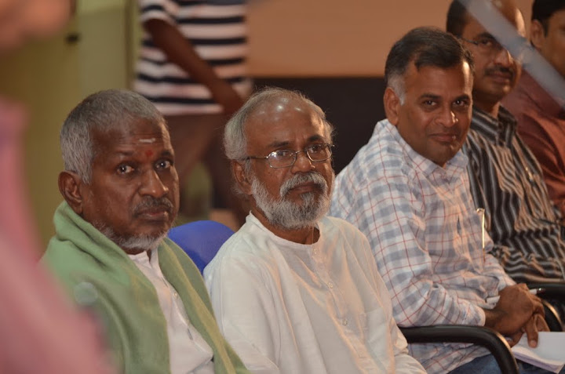

Living Tamil Association for World Literature (LTAWL)
The 2012 Vishnupuram Literary Circle Award was presented to the poet Devadevan at a large public gathering in Coimbatore, with the composer Ilaiyaraaja presenting the award himself — translated and adapted from the original Tamil account.
Devadevan received the Vishnupuram Literary Circle Award for 2012. The Circle's stated purpose in choosing him, as explained at the event, was to bring recognition to a major voice in Tamil poetry that had gone comparatively unnoticed by the wider literary establishment.
The ceremony was held on 22 December 2012 at the Municipal Corporation Art Hall in Coimbatore. Unlike the smaller, more intimate gatherings the Circle would later hold, this was a large public occasion — reports from the day put attendance at over a thousand people, among them close to a hundred friends of the Vishnupuram Literary Circle who had travelled in from cities across Tamil Nadu and from abroad to be present.

Selvantran conducted the proceedings. The evening opened with an invocation song performed by Suresh's daughters. Arangasamy then spoke on behalf of the Circle, describing it to the audience as a fellowship of literary friends whose purpose was to seek out and honour significant Tamil writers who had not received their due.


Naanchil Nadan delivered the keynote address, dwelling on the unadorned, simple beauty he found in Devadevan's poetry, and recalling the story of his own first meeting with Ilaiyaraaja. Ja. Rajagopalan followed with a closely argued reading of Devadevan's verse, and Mohanrangan read out a further piece of commentary on the poet's work. The film director Suka spoke about how his own introduction to poetry had come through reading Devadevan. Kalpetta Narayanan introduced the commemorative volume prepared for the award, observing how Devadevan's poems fuse a sense of time with a particular vantage point to create their characteristic poetic moment.
Ilaiyaraaja presented Devadevan with the award trophy and the accompanying prize. Speaking afterward, he said the poet's own remarks had sounded "like music," and called Devadevan an extraordinary poet.

Ilaiyaraaja also released a set of new books at the ceremony, including a short-story collection and a volume of essays on questions concerning Hindu religious thought, both by Jeyamohan, along with debut works by two younger writers making their first appearance in print.


Jeyamohan brought the formal proceedings to a close with a short address, and Devadevan closed the evening himself with his acceptance speech.


Translated and condensed from the original Tamil account(s): jeyamohan.in/33313, jeyamohan.in/33332 and jeyamohan.in/32521